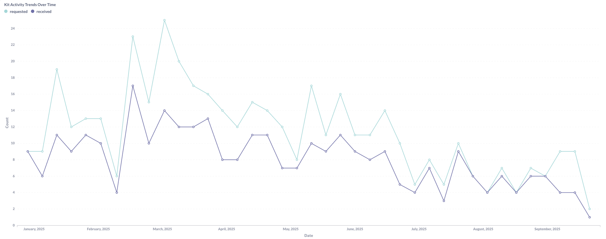
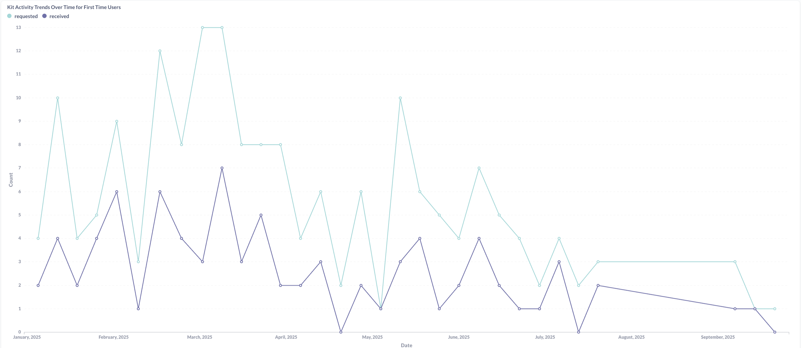
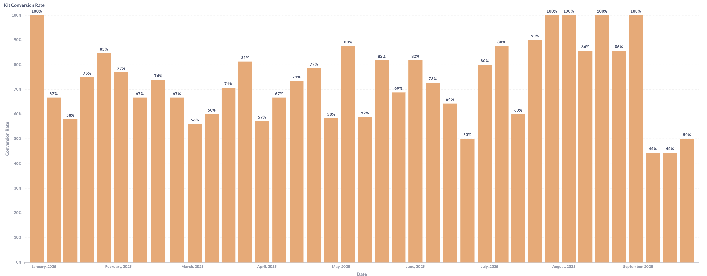
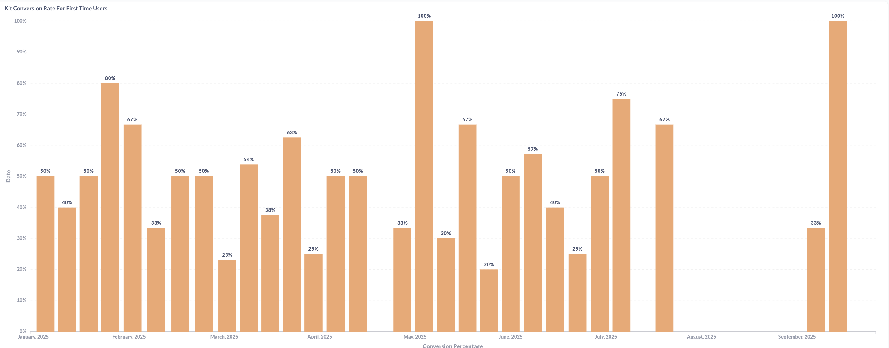
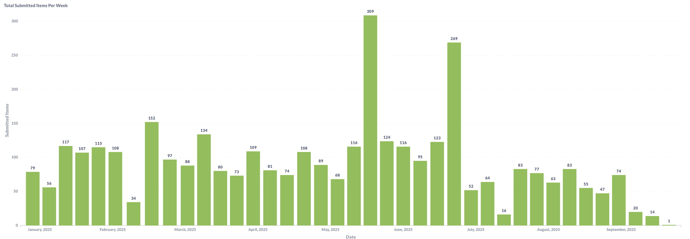
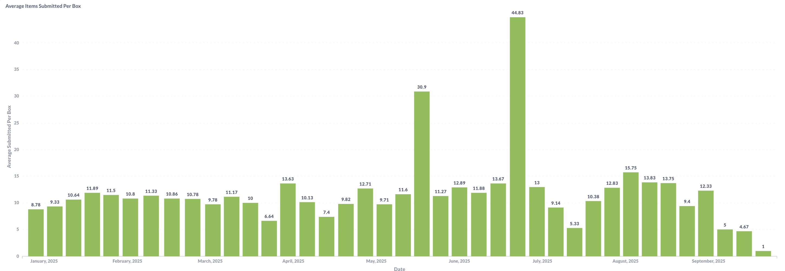
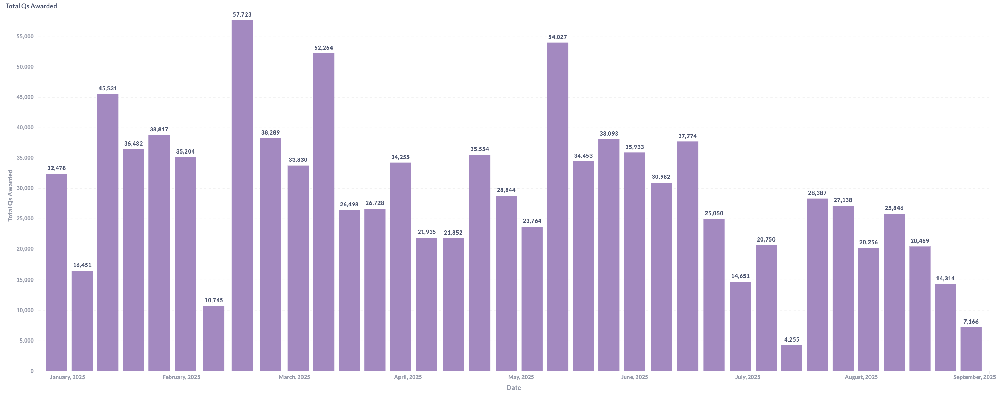
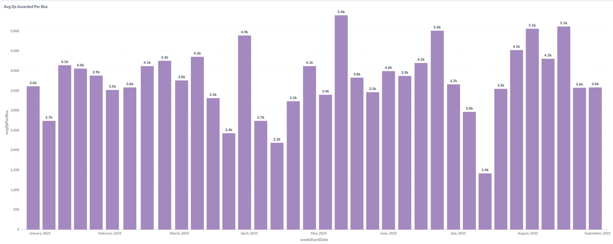
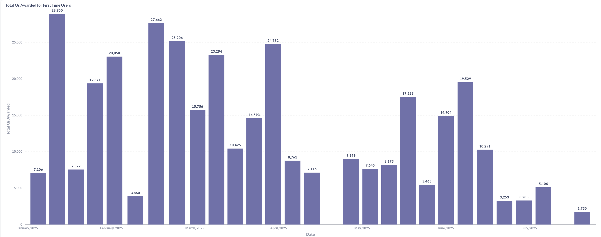
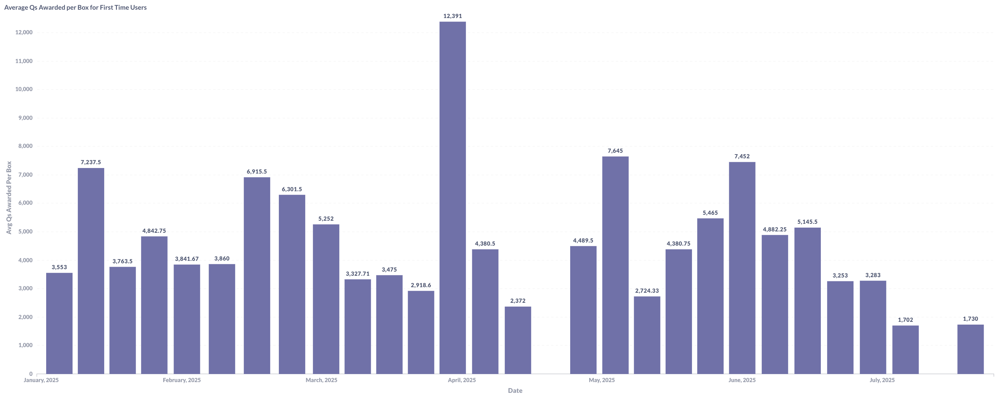

Kit Submission & Conversion Analytics Dashboard
Kit Processing & Customer Acquisition Analysis
Developed comprehensive kit analytics system to track customer submissions, conversion rates, and points distribution in the fashion resale business model.
Project Overview
Business Context
This dashboard tracks the core supply-side of the circular fashion platform - the customer kit request and shipment funnel that generates the inventory pool. Customers request shipping labels for clothing kits to earn points, making the request-to-shipment conversion rate and processing efficiency critical business metrics.
Key Metrics Tracked
- Kit request vs. actual shipment rates (overall and first-time users)
- Weekly submission volumes and seasonal trends
- Points awarded per kit and total points distribution
- First-time user behavior compared to repeat customers
Kit Request & Conversion Funnel Analysis
Kit Activity Trends Over Time (2025 YTD)

Kit Activity Trends for First Time Users (2025 YTD)

Activity Analysis:
Kit request activity shows concerning decline from 24 requests per week in early 2025 to near-zero by mid-year, indicating significant customer acquisition challenges. First-time users display more volatile patterns with requests ranging from 0-13 per week, suggesting new user hesitation and the critical importance of first-impression optimization.
Conversion Rate Performance
Kit Conversion Rate (2025 YTD)

Kit Conversion Rate for First Time Users (2025 YTD)

Conversion Analysis:
Conversion rates remain exceptionally strong at 80-100% among those who request kits, demonstrating that the shipping process and user experience effectively convert intent into action. First-time users show conversion rates fluctuating between 20-100%, averaging 50-67% - while facing more friction, the majority who request labels do follow through with shipments.
Strategic Funnel Insights: - Top-of-funnel crisis: Dramatic request decline requires immediate customer acquisition intervention - Conversion excellence: 80-100% follow-through validates shipping process and user experience quality - New user friction points: Variable conversion rates (20-100%) indicate inconsistent first-time experience - Intent-to-action gap: Strong conversion among requesters suggests the barrier is awareness, not process complexity
Submission Volume & Activity Analysis
Total Submitted Items Per Week (2025 YTD)

Average Items Submitted Per Box (2025 YTD)

Volume Pattern Analysis:
Submission volumes demonstrate significant volatility with peak activity reaching 309 items in a single week, while recent periods show dramatic decline to single-digit submissions. This extreme variability correlates with the declining request patterns, confirming supply-side challenges extend through the entire funnel.
Average items per box fluctuate between 5-45 items, with the extreme 45-item outlier likely representing bulk or special submissions. Excluding outliers, the typical range of 8-13 items per box suggests consistent member behavior in terms of what constitutes a “full” submission, providing operational predictability for processing capacity planning.
Operational Insights:
- Peak capacity validated: 309 items/week processed successfully demonstrates operational scalability
- Recent volume crisis: Decline to 1-20 items/week indicates urgent need for supply generation initiatives
- Box size consistency: 8-13 item average enables accurate processing time and point allocation forecasting
- Seasonal patterns evident: Volume spikes in specific periods suggest opportunity for targeted campaigns
Points Distribution Strategy Analysis
Overall Points Distribution
Total Points Awarded (2025 YTD)

Average Points Awarded Per Box (2025 YTD)

Overall Points Analysis:
Overall points distribution shows substantial variation with peak weeks awarding 52,000+ total points while average per-box awards range from 2,400 to 5,000 points. This consistency in per-box averages (despite total volume fluctuations) suggests standardized quality assessment algorithms rather than arbitrary point allocation. The stable per-box metrics enable predictable member value communication and operational forecasting.
First-Time User Points Strategy
Total Points Awarded for First Time Users (2025 YTD)

Average Points Awarded per Box for First Time Users (2025 YTD)

First-Time User Points Analysis:
First-time user points reveal aggressive acquisition strategy with average awards of 7,000-13,000 points per box - significantly higher than the 3,600-4,500 overall average. Peak first-time user awards reached 27,662 total points in single weeks with individual boxes earning up to 13,391 points, demonstrating substantial investment in new user acquisition through premium point bonuses.
Points Strategy Insights:
- Acquisition investment: First-time users receive 2-3x standard points, indicating strategic prioritization of new member onboarding
- Quality consistency: Stable per-box averages suggest effective item valuation algorithms
- Total distribution volatility: Wide swings (4,000-52,000) reflect volume fluctuations rather than valuation changes
- Retention opportunity: Standard 3,600-4,500 point average may be insufficient to maintain engagement after initial bonus period
Strategic Implications:
- New user incentive effectiveness: Higher points successfully drive first-time participation but may create unrealistic expectations
- Point economy sustainability: Aggressive first-time bonuses require careful balance against platform economics
- Value proposition clarity: Consistent per-box awards enable predictable member value communication
- Retention risk: Dramatic drop from first-time bonuses (13k) to standard rates (4k) may impact repeat behavior
Strategic Business Recommendations
Customer Acquisition Crisis Response:
- Immediate intervention required: Request decline from 24 to near-0 threatens supply chain viability
- Marketing campaign intensification: Leverage 80-100% conversion rate as social proof in acquisition messaging
- Channel diversification: Expand beyond current acquisition channels to reach new member segments
- Referral program optimization: Strong conversion rates suggest existing members could effectively recruit peers
First-Time User Experience Optimization:
- Onboarding refinement: Address 20-100% conversion volatility through clearer instructions and expectation setting
- Shipping support enhancement: Provide more guidance during critical first-shipment period
- Point expectation management: Communicate standard vs. bonus point structures to reduce retention shock
- Success stories amplification: Showcase typical member experiences to normalize process and outcomes
Supply Chain Sustainability:
- Volume stabilization initiatives: Develop consistent acquisition campaigns to smooth submission volatility
- Seasonal campaign planning: Capitalize on identified peak periods with targeted promotional efforts
- Processing efficiency maintenance: Preserve 309-item peak capacity for future growth scenarios
- Box size optimization: Standardize around 8-13 item optimal range for operational predictability
Points Economy Management:
- Acquisition cost analysis: Evaluate ROI of 2-3x first-time user point bonuses against lifetime value
- Retention incentive testing: Implement mid-tier loyalty bonuses to bridge first-time and standard rates
- Dynamic point allocation: Consider item-quality based adjustments while maintaining average consistency
- Point inflation monitoring: Ensure bonus structures remain sustainable as platform scales
Technical Implementation
Data Engineering:
- Cross-platform funnel tracking: Kit requests → shipping labels → actual shipments → points awarded
- Customer segmentation: First-time vs. repeat user behavioral analysis across all funnel stages
- Time-series analysis: Weekly, monthly, and seasonal trend identification for pattern recognition
- Conversion pipeline optimization: Real-time tracking of request-to-ship-to-process-to-points flow
Key Calculations:
- Conversion rates: (Shipped Kits / Requested Kits) × 100 across customer segments and time periods
- Points per item algorithms: Quality-based valuation system with new user bonus multipliers
- Volume forecasting: Historical pattern analysis for capacity planning and campaign timing
- Customer lifetime value: Tracking from first kit request through multiple shipments over time
Results & Impact
Supply Chain Intelligence:
- Critical decline identified: 2025 request drop from 24 to near-0 enables proactive intervention
- Process validation: 80-100% conversion rate confirms operational excellence in shipping experience
- Acquisition cost quantified: First-time user point premium (7k-13k vs 3.6k-4.5k) provides clear investment metrics
- Capacity baseline established: 309-item peak week validates scalability for future growth
Strategic Outcomes:
- Funnel optimization roadmap: Clear intervention points identified across request, shipment, and retention stages
- Customer education priorities: First-time user friction points isolated for targeted improvement
- Points economy framework: Data-driven approach to balancing acquisition incentives with sustainability
- Seasonal planning intelligence: Historical patterns enable strategic campaign timing and resource allocation
Business Impact: - Acquisition strategy framework: Evidence-based approach to reversing request decline trends - Retention program design: Gap analysis between first-time bonuses and standard rates informs loyalty initiatives - Operational confidence: Proven processing capacity supports aggressive growth planning - Value proposition validation: Consistent per-box points enable predictable member communication and marketing
This kit analytics system provides essential supply-side intelligence for optimizing the circular fashion platform’s customer acquisition funnel and inventory generation process.